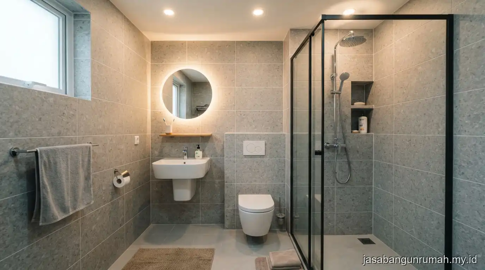

Daftar Isi
Renovasi bagian belakang rumah subsidi umumnya difokuskan pada penambahan dapur yang lebih luas dan perbaikan kamar mandi, dengan memanfaatkan sisa lahan belakang secara efisien tanpa melanggar batas Garis Sempadan Bangunan.
Mengapa Bagian Belakang Rumah Subsidi Sering Direnovasi Lebih Dulu?
Bagian belakang rumah subsidi sering menjadi prioritas renovasi karena dapur dan kamar mandi bawaan rumah tipe kecil biasanya berukuran sangat terbatas, sehingga kurang nyaman digunakan seiring bertambahnya kebutuhan penghuni.
Selain alasan kenyamanan, renovasi bagian belakang juga cenderung lebih mudah dilakukan dibandingkan bagian depan, karena tidak terlalu memengaruhi tampilan fasad rumah yang menghadap jalan. Pemilik rumah biasanya memanfaatkan sisa lahan belakang yang belum dibangun untuk memperluas dapur atau menambah satu kamar mandi tambahan sesuai kebutuhan keluarga.
Ide Perluasan Dapur pada Rumah Subsidi Tipe Kecil
Perluasan dapur pada rumah subsidi dapat dilakukan dengan menggeser dinding belakang ke arah sisa lahan yang tersedia, kemudian menata ulang tata letak kitchen set agar alur memasak lebih efisien meski ruang tetap terbatas.
Beberapa ide yang umum diterapkan antara lain membuat dapur semi terbuka dengan atap tambahan dari bahan polikarbonat untuk pencahayaan alami, memasang kitchen set custom berbentuk L agar memaksimalkan sudut ruangan, serta menambahkan jendela atau ventilasi pada dinding belakang untuk sirkulasi udara memasak.
Pemilihan material lantai dapur sebaiknya menggunakan keramik anti licin mengingat area ini sering terkena percikan air dan minyak.

Ide Renovasi Kamar Mandi agar Lebih Nyaman
Renovasi kamar mandi pada rumah subsidi umumnya berfokus pada perbaikan sistem drainase agar tidak mudah tergenang, penggantian keramik dinding dan lantai, serta penambahan sekat kaca sederhana untuk memisahkan area basah dan kering.
Ide lain yang sering diterapkan adalah mengganti kloset jongkok dengan kloset duduk untuk kenyamanan lebih baik, menambahkan water heater sederhana, serta memasang exhaust fan kecil untuk mengurangi kelembapan ruangan.
Penataan ulang posisi pintu kamar mandi juga kadang diperlukan agar sirkulasi antara dapur dan kamar mandi tidak saling mengganggu setelah renovasi bagian belakang selesai dilakukan.
Apa yang Perlu Diperhatikan Sebelum Memulai Renovasi Rumah Subsidi?
Sebelum memulai renovasi, pemilik rumah subsidi perlu memastikan sisa lahan yang akan dibangun masih sesuai dengan ketentuan Garis Sempadan Bangunan dan tidak melanggar batas minimal jarak dengan tetangga atau saluran umum di belakang rumah.
Pemilik juga sebaiknya memeriksa kondisi struktur dinding asli rumah subsidi sebelum menambah beban baru, mengingat sebagian rumah tipe subsidi menggunakan struktur yang lebih sederhana dibandingkan rumah non subsidi.
Untuk hasil yang lebih terencana dan sesuai anggaran, pemilik dapat berkonsultasi melalui layanan renovasi rumah agar penambahan dapur dan kamar mandi dikerjakan sesuai standar teknis yang aman.